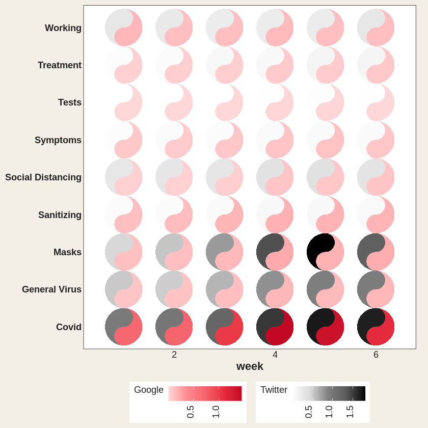
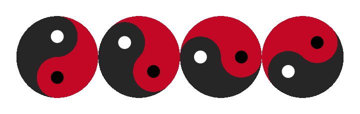
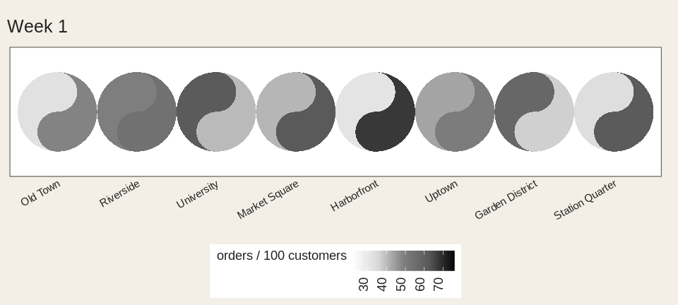
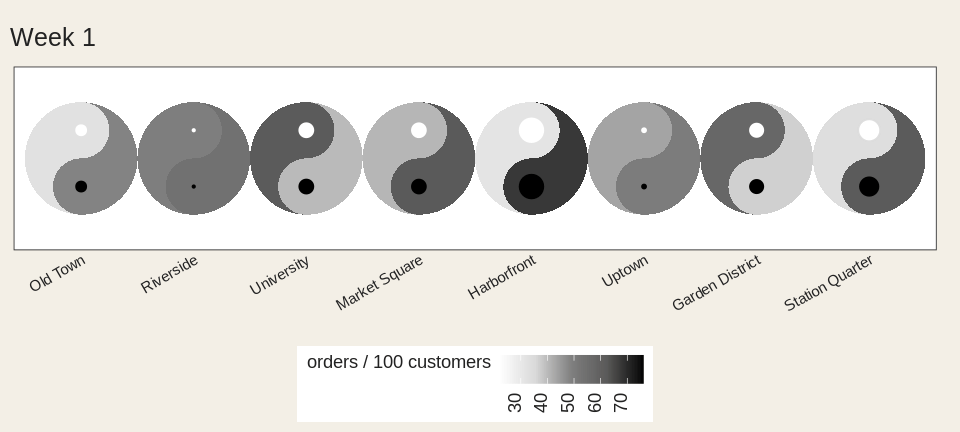

Two data sources. One grid of yin-yang glyphs. Both halves at a glance.
A geom_tile() heatmap gives you one number per cell. geom_taichi() gives you two.
Install
install.packages("ggtaichi")
# development version
devtools::install_github("PursuitOfDataScience/ggtaichi")One glyph, two numbers
Yin takes one source, yang the other. No decoration – every drop of ink is data.
library(ggtaichi)
library(ggplot2)
one <- data.frame(x = 1, y = 1, google = 7, twitter = 3)
ggplot(one, aes(x, y)) +
geom_taichi(yin = twitter, yang = google) +
coord_fixed() +
theme_taichi()
Now a grid of them
pitts_small <- subset(pitts_tg, week <= 6)
ggplot(pitts_small, aes(week, category)) +
geom_taichi(yin = Twitter, yang = Google) +
theme_taichi()
Covid and Masks lean dark – lots of Twitter – while staying pink, so only moderate Google.
The eyes are data too
Six dimensions in one mark: x, y, two fills, two eyes.
quad <- data.frame(x = c(1, 2, 1, 2), y = c(2, 2, 1, 1),
yin = c(3, 5, 7, 9), yang = c(9, 7, 5, 3),
reach = c(10, 40, 25, 5), quality = c(2, 1, 4, 8))
ggplot(quad, aes(x, y)) +
geom_taichi(yin = yin, yang = yang, eyes = TRUE,
yin_eye_size = reach, yang_eye_size = quality,
limits = c(0, 10)) +
coord_fixed() +
theme_taichi()
Spin it
angle takes a constant or a column – a seventh channel.
rot <- data.frame(x = 1:4, y = 1, yin = 1:4, yang = 4:1,
turn = c(0, 45, 90, 135))
ggplot(rot, aes(x, y)) +
geom_taichi(yin = yin, yang = yang, angle = turn, eyes = TRUE,
limits = c(0, 5)) +
coord_fixed() +
theme_taichi()
Hand angle to gganimate and it actually spins.
library(gganimate)
spin <- expand.grid(x = 1:4, f = 1:48)
spin$y <- 1
spin$turn <- (spin$f - 1) * 7.5 + (spin$x - 1) * 45 # each one out of phase
ggplot(spin, aes(x, y)) +
geom_taichi(yin = 1, yang = 2, angle = turn, eyes = TRUE,
yin_colors = "grey15", yang_colors = "#C20824",
show.legend = FALSE) +
coord_fixed() +
theme_void() +
transition_states(f, transition_length = 1, state_length = 0)
Watch a season go by
cafes_tg follows espresso and matcha across twelve weeks. Espresso cools off, matcha warms up.
ggplot(cafes_tg, aes(neighbourhood, "")) +
geom_taichi(yin = matcha, yang = espresso, shared_legend = TRUE,
yin_name = "orders / 100 customers") +
theme_taichi() +
theme(axis.text.x = element_text(angle = 30, hjust = 1, size = 9)) +
labs(title = "Week {closest_state}", x = NULL) +
transition_states(week, transition_length = 2, state_length = 1)
Categories work too
disc <- data.frame(x = c(1, 2, 1, 2), y = c(2, 2, 1, 1),
method = factor(c("A", "B", "C", "A")),
outcome = factor(c("win", "loss", "win", "loss")))
ggplot(disc, aes(x, y)) +
geom_taichi(yin = method, yang = outcome) +
coord_fixed() +
theme_taichi()
The legend keys are little taichi as well.
Same units? One legend.
ggplot(cafes_tg, aes(week, neighbourhood)) +
geom_taichi(yin = matcha, yang = espresso, shared_legend = TRUE,
yin_name = "orders / 100 customers") +
remove_padding() +
theme_taichi()
Bigger, sure – but by how much?
Two fish in one spot tell you which. explicit computes the gap and shows you how much. Cells where the two agree get no eye at all.
ggplot(cafes_tg, aes(week, neighbourhood)) +
geom_taichi(yin = matcha, yang = espresso, shared_legend = TRUE,
yin_name = "orders / 100 customers",
explicit = "difference") +
remove_padding() +
theme_taichi()
Or as tilt, which the eye reads far more precisely. Upright means they agree.
tilt <- data.frame(x = 1:5, y = 1, yin = c(1, 3, 5, 7, 9), yang = 9:5)
ggplot(tilt, aes(x, y)) +
geom_taichi(yin = yin, yang = yang, shared_limits = TRUE,
explicit = "difference", explicit_channel = "angle") +
coord_fixed() +
theme_taichi()
Animate it and the eyes blink shut exactly where the two sources cross.
ggplot(cafes_tg, aes(neighbourhood, "")) +
geom_taichi(yin = matcha, yang = espresso, shared_legend = TRUE,
yin_name = "orders / 100 customers",
explicit = "difference") +
theme_taichi() +
theme(axis.text.x = element_text(angle = 30, hjust = 1, size = 9)) +
labs(title = "Week {closest_state}", x = NULL) +
transition_states(week, transition_length = 2, state_length = 1)
Is your palette fair?
If the two ramps don’t span the same luminance, equal values don’t look equal and one fish quietly wins. Ask:
taichi_check_palette()
#> largest luminance mismatch : 40.6 L* (tolerance 5.0)
#> Verdict: FAILYes – the defaults fail their own check, and are kept only so old figures don’t move. palette = "balanced" passes.
ggplot(cafes_tg, aes(week, neighbourhood)) +
geom_taichi(yin = matcha, yang = espresso,
palette = "balanced", shared_limits = TRUE) +
remove_padding() +
theme_taichi()
Too many cells? Bin it.
ggplot(cafes_tg, aes(week, neighbourhood)) +
geom_taichi(yin = matcha, yang = espresso,
yin_scale = scale_taichi_yin_binned(n.breaks = 4),
yang_scale = scale_taichi_yang_binned(n.breaks = 4),
shared_limits = TRUE) +
remove_padding() +
theme_taichi()
Hover for the exact numbers
p <- ggplot(cafes_tg, aes(week, neighbourhood)) +
geom_taichi(yin = matcha, yang = espresso,
interactive = TRUE, data_id_by = "source")
ggiraph::girafe(ggobj = p)Hover one yin fish and every yin fish lights up. Live version in the gallery.
More
vignette("ggtaichi") for the full tour, vignette("animations") for motion, and the gallery for the rest.
Acknowledgement
ggtaichi is a spinoff of the ggDoubleHeat package, which introduced the idea of folding two data sources into a single reformed heat map. ggtaichi takes that two-scale design and re-imagines the per-cell glyph as a taichi diagram.